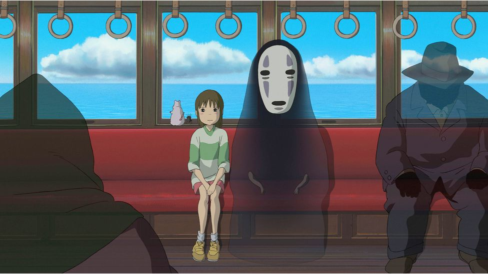
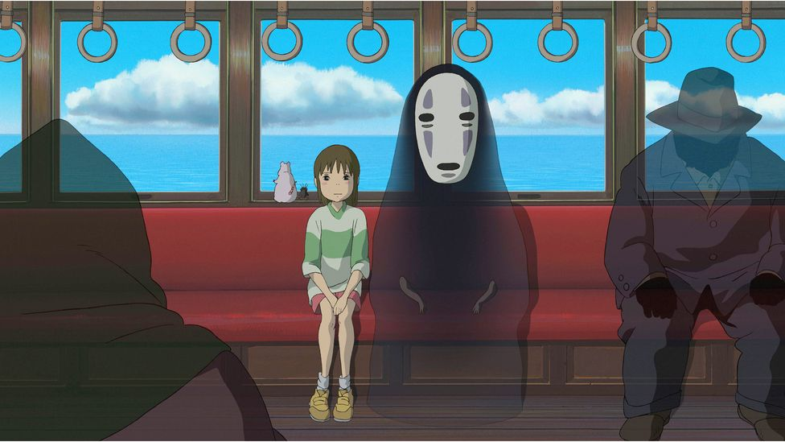

Spirited Away is a Japanese animation film made by Studio Ghibli. The movie tells a story of a girl called Chihiro, who ends up at a town occupied with evil gods and spirits, after getting lost in what it seemed to be a theme park. Realizing that her human-being identity is taken away and that she is captured by spirits and creatures to work at a hot spring, she tries to return to the human world and get her own identity back.
 

This was one of my first encounters to a lot of elements in the Japanese culture, as the film takes place in a traditional Japanese hot spring filled with traditional Japanese spirits and gods that appear in myths and tales. First of all, the hot spring, or Onsen, culture in Japan goes way back. According to one of the Japanese legends, Izanagi, the creator of the world, took a water bath to purify himself after going down into the land of the dead when his wife, Izananami, passed away. This story also tells how other gods and goddesses were actually created from Izanagi's tears and wet body from his bath. As shown from this story, the Onsen culture signifies purity and creation of spirits and religions. This plays a huge role in this film Spirited Away, as Chihiro has to work at an Osen after being captured in the land of the dead, or the land of the spirits and supernatural creatures. This shows the close connection between Japanese religions and the Onsen culture.
Diving deeper about the religions in Japan, there are a lot of ancient gods in Japanese culture. One religion that the movie focuses on is Shinto, which emphasizes the harmony between human and nature, having practices to show respect to the nature spirits. The Shinto beliefs really dive into how sincere and authentic humans should treat the nature spirits. This is shown through how Chihiro interacts with gods and spirits that she encounters in town. Her respectful, sincere attitude is definitely something that the Japanese culture values a lot, especially with the alignment with its one of the most valued religions Shinto.
Spirited Away talks about how the Japanese culture perceives identity as well. In the film, when Chihiro's family gets lost in the theme park, her parents decide to eat food that was left at a vendor. However, that was the food for the spirits, and this mistake turns her parents into pigs. This signifies the loss of human identity.
In Japanese culture, search for one's true identity is very important. Traditionally a lot of Japanese thinkers and scholars tried to find the answer of finding the identity, and to this date, it is considered shameful when one cannot keep their identity. On this note, this film talks a lot about how it is to lose one's identity, and how important it is to search for true identity. This is highlighted in the repeated importance on remembering and writing Chihiro's own name. The reason why Chihiro still has a connection to the human world is because she still remembers her human name.
As opposed to that, this spirit character called No-Face, as the name suggests, has lost his identity. He is portrayed as a character who wanders all the time and eats everything in sight to fill himself up, but he can never satisfy himself because he lacks his identity, showing how important your name and identity is in Japanese culture.
When Chihiro is forced to work at the Onsen, she is told to change her current clothes into traditional hotspring clothes. This signifies the loss of current identity and putting on a new identity. She feels hesitant because she feels like she would lose her identity when this happens.
In addition, there are twin sister characters in Spirited Away called Yubaba and Zeniba. Yubaba is the one who runs the whole hotspring building and forces Chihiro to stay and work there, and her twin sister Zeniba is a character who eventually helps Chihiro get her identity back. This is interesting because although these two characters have shared identities biologically, their personal or true identities are contrasted to each other's. This highlights the importance of having a true identity.